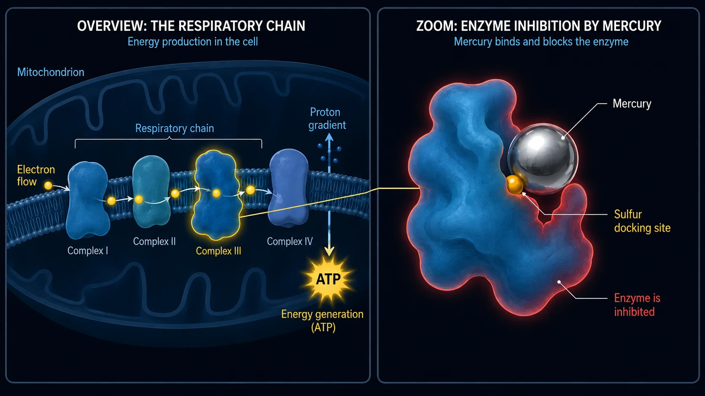

Medication- and Toxin-Induced Tinnitus (Ototoxicity)
Last updated: June 2026
I, too, suffered from extreme, hellish tinnitus back then. Both of my tinnitus episodes were exclusively noise-induced. But that constant sound was exactly the same relentless assault on my nerves, my sleep, and my entire life. Doctors often told me, too, that I simply had to learn to live with it.
I’m writing this article about chemical triggers because the subject played an important role in my own research. Since 2012, I’ve studied cellular biochemistry intensively—including toxicology and environmental medicine. And this is exactly where it all comes full circle: environmental medicine practitioners (such as Dr. Klinghardt or Dr. Mutter) often observe a fascinating phenomenon in practice. When a hidden toxin or heavy-metal burden is a major factor in a person’s tinnitus, targeted cellular detoxification can often lead to marked or noticeable relief from the tinnitus. What I’m sharing here is my own understanding based on that research, which also forms the basis for the approaches we’ll discuss later on this website.
The Chemical Attack from Within
When we think of tinnitus, two images usually come to mind immediately: a deafening concert (noise), or massive stress—whether general or rooted in inner trauma (psychosomatics). But there is a third trigger that is neither mechanical nor emotional, but purely chemical: medication- or toxin-induced tinnitus. In my view, this is one of the least common forms of tinnitus—but for the sake of completeness, I also want to explain how I see this third trigger. The technical term is ototoxicity (literally, “ear toxicity”).
It might sound abstract at first, but our inner ear is extremely sensitive to certain chemical substances. Some medications or environmental toxins can travel through the bloodstream directly into the inner ear, where they can irritate or even damage the delicate hair cells or the auditory nerve.
The Mechanism: How Chemistry Creates Sounds
Remember the ion channel at the tip of the tiny hairs, which remains permanently too far open after an overload and no longer closes properly—as already explained on my noise-induced tinnitus page. With acoustic trauma, the mechanical force of the sound waves changes the geometric position of the delicate stereocilia.
With medication- or toxin-induced tinnitus, the end result is often very similar, but the route is different. Every single hair cell in the ear can basically be thought of as a tiny biological battery. It maintains an extremely delicate balance of energy (ATP), minerals, and electrical potential.
Environmental toxins or toxic doses of medication can disrupt this delicate balance by severely impairing the cell’s power plants—technically known as mitochondria. At the cellular level, as I understand the biochemistry, this is what happens:
Because the mitochondria are essential to the cell’s energy supply, the cell’s energy level—its ATP level—drops as a result. The tiny pumps in the cell wall, which continuously consume ATP—cellular energy—as they work, simply can no longer keep up fast enough to maintain the chemical balance. Calcium consequently accumulates inside the cell. Because calcium is the direct trigger for signal transmission in biology, this ion surplus forces the cell to fire “false signals” continuously and uncontrollably. To me, this is not some mystical coincidence, but a logical, automatic biochemical process. The brain perceives this nonstop electrical barrage as sound.
The particular sound you hear—a high-pitched whistle, a hiss, or a low hum—usually depends simply on the precise location of the affected hair cells within the cochlea (the spiral-shaped part of the inner ear). The ear usually isn’t physically destroyed at that moment, but its delicate internal order has been thrown out of rhythm.
Electrical Short Circuits (The Auditory Nerve)
It’s not only the hair cells that are at risk, but also the “power cable” itself—the auditory nerve. This nerve is wrapped in a protective sheath called myelin. That insulating layer is extremely rich in fats and minerals and is therefore particularly vulnerable to toxins circulating in the blood. If chemical stress weakens or “thins” the sheath, the nerve no longer transmits signals cleanly. Real electrical “short circuits” develop.
And this is where the pure logic of our anatomy becomes clear: our auditory nerve is not a simple single wire, but a thick bundle of thousands of tiny nerve fibers. Each individual one of these fibers is responsible for transmitting one particular pitch. If the toxic short circuit (the breakdown of myelin) occurs precisely at the nerve fiber responsible for high frequencies, your brain logically registers a high-pitched whistle. If a fiber for low pitches is affected, you hear a low hum. So the rushing, hissing, or whistling you perceive is absolutely no coincidence—it depends largely on the tiny point along the main cable where the insulation was damaged.
The Universal Law of Tinnitus
When all these puzzle pieces are put together, a central common denominator crystallizes: It is my deepest conviction—and my experience—that tinnitus is ultimately the result of chronically irritated, overexcited nerves involved in auditory processing. From a physical standpoint, it almost does not matter where exactly the starter pistol for this overexcitation is fired:
- Whether the hair cells (because of noise or medication) are stuck in emergency mode and continuously flood the auditory nerve with glutamate…
- Whether environmental toxins and heavy metals attack the nerves’ insulation (myelin) and cause direct short circuits there…
- Or whether massive, chronic psychosomatic stress builds up in the brain and keeps the auditory-processing centers in a state of constant electrical overactivation “from above”…
Once you’ve understood this universal logic, tinnitus often loses its terrifying mystique altogether.
In my experience, the end result is almost always exactly the same: the nervous system in that area is chronically irritated and broadcasts a nonstop electrical SOS barrage. Once you’ve understood this universal logic, tinnitus often loses its terrifying mystique altogether—and the path to a solution suddenly becomes crystal clear.
Typical Triggers (Ototoxic Substances)
But okay, moving on: there’s a whole range of substances known to have potentially ototoxic effects. (Important: this is not a medical list for self-diagnosis. It is only meant to provide a general understanding!)
1. Medications
Some medications can overstimulate the inner ear. But knowing their names isn’t enough—we need to understand why they derail the system. Only once we understand the mechanics of the damage does our later approach (cellular energy and detoxification) make any sense. The best-known groups include:
High-dose painkillers (especially aspirin/ASA)
First, some reassurance: a normal headache tablet generally does not cause tinnitus. Research often describes a pronounced dose paradox here. It usually becomes dangerous only at genuinely toxic high doses (often several grams a day). When that happens, pharmacological models suggest that the medication sets off a three-stage chain reaction in the inner ear:
- The motor starts sputtering: The active ingredient is thought to block prestin, a tiny protein that acts like a motor inside the outer hair cells. As a result, the ear’s acoustic amplifier collapses. In a panic response, the brain often turns its central “volume control” (central gain) all the way up in an attempt to hear anything at all.
- The nerves become hypersensitive: At the same time, models suggest that the medication pushes the receptors on the auditory nerve into a state of increased excitability. The stimulus threshold drops, so the nervous system becomes markedly more sensitive to even the smallest signals.
- The power outage (the ignition): According to biochemical research, high-dose aspirin acts as an “uncoupler” inside mitochondria. Figuratively speaking, it pulls the cell’s power plug (ATP deficiency). And this is the fascinating, logical difference from acoustic trauma: with noise, mechanical force literally bends the cell’s delicate hairs. As a result, the calcium channel remains permanently open like a jammed door, and calcium pours in unchecked. With an aspirin overdose, that does not happen. The hairs remain completely intact and in place. Here, “only” the chemistry has been knocked out of balance. No more calcium than usual enters—but because of the rapid drop in energy, the cell’s tiny calcium pumps simply cannot keep up with pumping it back out. For that moment, the cell is completely overwhelmed even by the normal calcium load. The result is the same: calcium builds up inside and forces the cell to release the neurotransmitter glutamate continuously.
The possible tinnitus outcome: this uncontrolled flood of glutamate hits nerves whose stimulus threshold is already lowered (stage 2), and the signal is sent to a brain whose volume control is turned up as far as it will go (stage 1). A deafening nonstop barrage develops. This simple cellular logic also explains an everyday phenomenon that often leaves many doctors themselves without a conclusive answer: why does the uncle often find that his ear is quiet again soon after he stops taking aspirin, even after massively overdosing on it for a week—while his 26-year-old nephew has been living with tinnitus for four months after just two visits to a loud club, and it simply won’t go away? To me, the answer is crystal clear: in the uncle’s case, it was a biochemical power outage paired with hypersensitivity of the auditory nerve. Once the medication has been discontinued in consultation with a doctor and cleared by the body, the cell’s power plants can operate in their normal physiological mode again. That gives the pumps the energy they need to remove the excess calcium so the system can work properly again. In the nephew’s case, by contrast, there was raw mechanical violence. Based on my research and understanding, his delicate stereocilia then sit at altered geometric angles: some tilt more, others less. This keeps the ion channels permanently farther open, so even with the same energy supply, more calcium enters the cell than is physiologically intended. It’s like bending a door hinge with brute force. Obviously, that doesn’t repair itself over a weekend just because the noise has stopped—you’ll find more information on my noise-induced tinnitus page.
Certain antibiotics (aminoglycosides)
These powerful antibiotics are generally used only in hospitals for severe bacterial infections (e.g., gentamicin). They have an extremely insidious property: they often accumulate preferentially in inner-ear fluid and are cleared from there only at an agonizingly slow rate—they can remain there for weeks or months. Once there, they react with iron in the body and trigger a massive burst of “free radicals” (ROS). It’s like a biochemical wildfire attacking the delicate cell membranes and the internal actin framework of the tiny sensory hairs. And here, a simple biological logic leads to two outcomes:
- Outcome 1 (cell death): If the body is already weakened at this point or has hardly any nutrient reserves, or if there is preexisting damage, the cell collapses completely under this chemical wildfire and dies (apoptosis). The paradoxical result: in this case, tinnitus usually does not develop. A dead cell no longer transmits. Instead, pure, “silent” hearing loss (deafness) develops at precisely that frequency.
- Outcome 2 (the fight for survival = tinnitus): The cell only just survives the attack, but it remains massively damaged at a structural level. It’s basically exactly like acoustic trauma, only triggered purely by chemistry. The rigid internal skeleton (actin) collapses, causing the tiny hairs to wilt like flowers without water. But the cell is still alive! And because it’s alive, it desperately tries to fight the calcium pouring in through the leaky membrane. Because this ion influx is the direct chemical command for signal transmission, the severely damaged cell is forced into nonstop panic mode, continuously firing the neurotransmitter glutamate at the auditory nerve. That cellular fight for survival becomes a nonstop electrical barrage—and that is exactly what you perceive as tinnitus.
Diuretics (powerful water pills)
Loop diuretics do not just remove water from the body; they also flush out large amounts of electrolytes such as potassium and sodium. The problem? The inner ear has its own small voltage source: the stria vascularis. This layer of tissue constantly pumps potassium into the fluid of the inner ear to maintain a constant voltage there—the battery from which the hair cells draw their power for hearing. Water pills block this very biochemical pumping mechanism. As a result, the voltage in the ear drops dramatically. The biological battery is suddenly “empty,” and the auditory system enters a chaotic alarm state that erupts as rushing or whistling.
Chemotherapy drugs (such as cisplatin)
These aggressive cancer drugs are often based on platinum (a heavy metal). They are designed to interfere with the DNA of cells. If cisplatin does cause tinnitus, however, pharmacological models attribute it to a full-blown biochemical wildfire in the inner ear: in this case, cisplatin completely strips the cell of its most important endogenous protective substance (glutathione). Without that shield, free radicals eat microscopic holes into the cell membrane and destroy the ion pumps. The result is an extreme ion imbalance: calcium floods the cell and forces it into a nonstop glutamate barrage. At the same time, cisplatin is highly neurotoxic and literally breaks down the auditory nerve’s myelin sheath (its insulation). When the damaged cell’s barrage hits an unprotected, exposed nerve, real, measurable short circuits and misfires develop directly along the main cable to the brain. The same biological tinnitus fork applies here: if the cell is completely destroyed (apoptosis), silence (deafness) usually develops. If it survives as a badly damaged ruin with leaky membranes and exposed nerves, it often fires a permanent interference signal. This explains why chemotherapy-related tinnitus is often so extremely persistent.
Quinine (antimalarial drugs & muscle-cramp medications)
Quinine has a powerful vasoconstrictive effect. The inner ear is an absolute anatomical dead end—it is supplied with blood by just one single, tiny artery (the labyrinthine artery). There are no “detours.” If quinine constricts this tiny artery while also making red blood cells less flexible, blood flow stalls. The hair cells are then cut off from the oxygen and nutrients they absolutely need. They gasp for air and immediately switch into tinnitus panic mode.
2. Heavy Metals & Environmental Toxins
Heavy metals such as mercury, lead, aluminum, cadmium, and others act like extremely aggressive saboteurs at the cellular level. Anyone familiar with comprehensive detoxification protocols knows: these metals do not merely poison inner-ear cells in a diffuse way; they interfere directly with specific biological processes and block them. In the cochlea and at the auditory nerve, this happens through four extremely destructive mechanisms:
- 01Trojan horse
- 02Thiol hack
- 03Wrecking ball
- 04Myelin shredder
Mechanism 1: the Trojan horse (trace element displacement)
Metals such as cadmium, mercury, and others often have a striking chemical similarity to essential trace elements—especially zinc and selenium. The body is fooled and incorporates the heavy metal into proteins in place of zinc. The result is devastating: zinc acts as a kind of natural “brake” at receptors on the auditory nerve. It keeps the nerve from overreacting immediately to every tiny stimulus. If a heavy metal displaces that zinc, the brake fails completely. The auditory signals slam into the nervous system unchecked, which, in my experience, manifests as deafening tinnitus. At the same time, displacement of selenium severely disrupts production of the body’s most important antioxidant (glutathione). The cell’s defenses are in danger of collapsing.
Mechanism 2: the thiol hack (bending the proteins)

Heavy metals also have an enormous chemical affinity for sulfur. Most of our enzymes and tiny cell pumps (such as ATP-powered calcium pumps) contain sulfur-bearing docking sites known as thiol groups (-SH). When a heavy metal reaches the inner ear, it immediately binds to these sulfur groups. As the metal binds to the enzyme, it forces the protein to change its 3D structure—the protein literally bends out of shape. As a result, the hair cell’s calcium pump becomes blocked and stops working.
Mechanism 3: the biological wrecking ball (direct cell destruction)
Beyond sabotaging the pumps, metals also attack the cell’s hardware directly and physically. Lead and cadmium enter the mitochondria (the cell’s power plants), lodge in the cellular respiratory chain, and severely choke off ATP production. Figuratively speaking, the cell is in danger of suffocating from within. At the same time, these metals trigger an explosion of free radicals in the ear, which literally oxidize the hair cell’s fatty protective sheath (membrane)—it goes rancid, “melts,” and becomes riddled with leaks (lipid peroxidation). Toxic calcium then surges in like water through a broken dam. On top of that, the metals attack the rigid protein framework (actin) inside the tiny sensory hairs. Molecular bridges break; the hairs wilt, buckle, and leave the stimulus channels stuck permanently open.
Mechanism 4: the myelin shredder (attack on the main cable)
Heavy metals also eat their way directly into the cable itself—the auditory nerve—and destroy its insulating layer, the myelin. This layer is nearly 80 percent fat, making it a perfect target for oxidative stress. Free radicals practically eat that fat away. Mercury, for example, binds to “myelin basic protein,” the molecular glue of the insulating sheath, causing it to flake away. In toxicology, lead is strongly suspected of going one step further and specifically damaging Schwann cells—the tiny construction workers that are actually supposed to repair the myelin. Without insulation, the electrical signals of hearing slow dramatically, jump to neighboring exposed nerve fibers (cross-talk), and produce severe misfires.
-
01Chemical entry
A medication at a toxic dose—or a heavy metal or environmental toxin—reaches the inner ear through the bloodstream.
-
02The balance tips
ATP drops, the pumps can no longer keep up, calcium accumulates inside the cell, and the myelin thins.
-
03Nonstop false signal
The weakened cell fires glutamate continuously, or signals jump to neighboring fibers—the brain perceives it as sound.
But Then Why Doesn’t Everyone Get Tinnitus? (The Heavy-Metal Lottery & the Perfect Storm)
At this point, one logical question forces its way to the surface: if mercury (from fish or amalgam), lead (from old pipes), and other metals wreak such extreme destruction, why doesn’t half of humanity get tinnitus immediately after eating a tuna pizza? The answer lies in our body’s own protective shields and a genuine biological lottery—and in the fact that tinnitus is almost never triggered by one single, isolated factor.
1. The toxicological lottery (the local weak spot):
Heavy metals don’t come with a built-in GPS system for the ear. They circulate blindly through the blood and seek out the site of least resistance (locus minoris resistentiae). Where they accumulate is often a matter of sheer chance, depending on where your body happens to have a weak spot at that moment. If, for example, you grind your teeth extremely hard at night or have a silent inflammation around the neck and jaw, vascular permeability around your ear is enormously high. The blood-labyrinth barrier, which is meant to protect the ear, then stands wide open. Mercury finds this open door and accumulates right there at the auditory nerve, while in another person it may simply continue onward.
2. The body’s own landfill, the glutathione shield & the starting stockpile:
A healthy body produces large amounts of glutathione in the liver—a molecule that binds heavy metals as if placing them in handcuffs and carries them out of the body before they reach the ear. But this is where the harsh reality of exposure matters: some people, often without the slightest idea, are exposed to vastly higher levels of heavy metals than others—through polluted air, old amalgam fillings, workplace exposures, smoking, metal-contaminated foods, or constant contact with contaminated everyday objects. In the end, the toxic burden always reflects the interplay between the sheer amount entering the body and the body’s ability to bind and eliminate these toxins. If the body cannot manage this, it often stores toxins in supposedly safe “landfills” (such as bone or ordinary body fat) to remove them from the bloodstream. And this is exactly where a fatal biological trap for our hearing lies: our nervous system—and especially the auditory nerve’s insulating myelin sheath—is nearly 80 percent fat. When the body then desperately tries to “park” lipophilic (fat-soluble) heavy metals in fatty tissue, an unlucky turn in this biological lottery often makes that highly sensitive nerve tissue or the structures around the hair cells the exact landing site.
And there is another hard biological fact that is often kept quiet: many people enter this toxic lottery on the day they are born with an already-filled stockpile. Why? Because studies suggest that during pregnancy, mothers pass part of the heavy-metal burden they have accumulated over years through the placenta to the fetus. For some people, the cellular barrel is therefore already significantly fuller from the very beginning.
Things finally become dangerous when this protective system tips: extreme stress, genetics, or nutrient deficiency suddenly push detoxification to its limit. The body’s own landfills open up, or newly arriving toxins are not intercepted in the first place; they circulate in the blood and—as in the lottery described above—inevitably seek out the body’s weak spot.
3. The fateful combination (the perfect storm):
In biological reality, however, we often see an extremely complex interplay of factors—and that also clears up the misunderstanding that anyone who develops tinnitus after a noise event must automatically be completely poisoned by heavy metals. That simply isn’t the case.
What often happens instead is this: a person already carries a certain baseline toxic burden from environmental toxins or heavy metals—inside the hair cells, inside their mitochondria, or directly at the auditory nerve. The myelin sheath may already be slightly thinned, the calcium pumps are already running closer to their limit, or the cells are working right at the edge. By itself, that often still does not trigger any permanent tinnitus at all. Your body buffers it and just manages to balance on a tightrope.
But then life piles on several factors at once: you slide into a period of extreme chronic stress. The stress hormones (adrenaline/cortisol) constrict blood vessels, massively reduce blood flow in the ear, and rob you of restorative sleep. The system can no longer regenerate at night. If, in precisely this highly vulnerable state, you are then also exposed to a noise event (whether one acute noise spike or chronic noise exposure), somewhere in that chain, the system finally tips. The already damaged hardware simply can’t absorb that mechanical force anymore. The ion balance collapses, the actin framework gives way, or the myelin sheath finally fails—and nonstop electrical signals can develop.
From my perspective, that is the fateful combination: the toxin slowly and insidiously weakens the hardware, stress cuts the oxygen supply, and noise is then often just the final drop that sends an already brimming cellular barrel spilling over.
At the other end of the spectrum, of course, I also believe that tinnitus can be caused solely by toxic medications or severe heavy-metal poisoning. If the chemical dose is high enough (for example, through aggressive chemotherapy or acute poisoning), there is absolutely no need for a “perfect storm” or an additional noise event. In those cases, the toxin alone is entirely sufficient to disable the cell’s power plants or damage the nerves.
Why Toxin-Induced Tinnitus (Heavy Metals & Pesticides) Is Often So Persistent
Avoiding noise stops the trigger immediately. With toxin-induced tinnitus—and here I’m referring specifically to exposure to genuine environmental toxins, pesticides, or heavy metals—things are often considerably more complicated. This form becomes especially tough and persistent when those substances actually turn out to be the main mechanism or a major factor behind the tinnitus. That is because they lodge deep in nerve tissue and cells. They don’t simply disappear from the bloodstream after a few hours like a standard painkiller. They cling tightly, and the body can often eliminate these stubborn toxins only with great difficulty, at an extremely slow rate, and over a long period.
What Can You Do?
So what can you do now? You’ll find the scientific and practice-based evidence behind the mechanisms described here on my sources page. If you want to dig deeper and find out what, in my view and experience, specifically helps with medication- or toxin-induced tinnitus, just click the link below:
Important note
Never stop taking prescription medication on your own! If you experience tinnitus in connection with taking medication—especially if it came on suddenly—please see a doctor promptly to clarify how to proceed. Any change to your medication should be made under a doctor’s guidance.
The content, explanatory models, and strategies shared on this website are not medical advice, but my personal account and my own research. Every body is different. I’m not a doctor and make no promises of a cure. If you have health problems, please consult a qualified doctor. Putting the approaches described here into practice is your own responsibility.